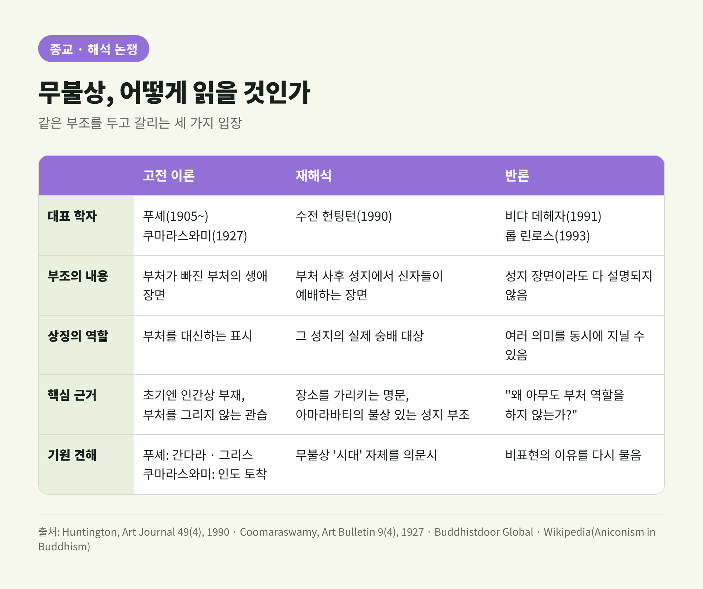
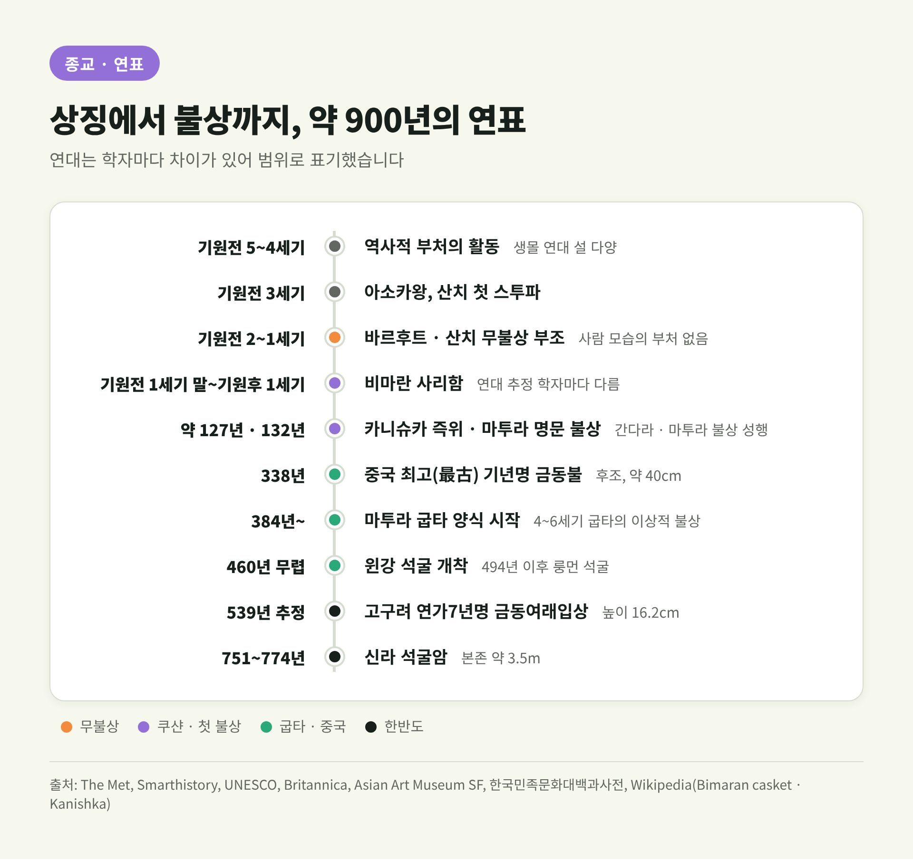
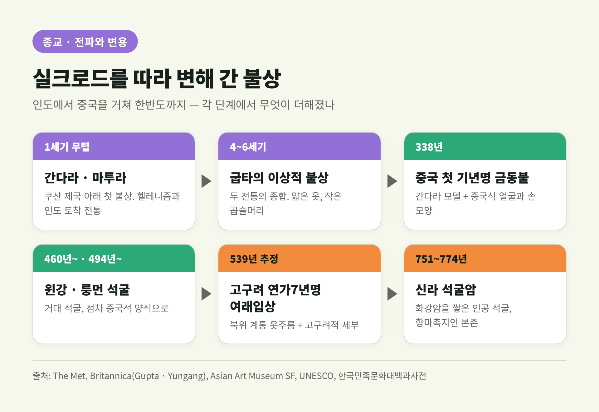

불상의 탄생 — 부처는 왜 수백 년 동안 사람 모습으로 그려지지 않았을까
이번 글에서는 불상이 처음 만들어지기까지의 긴 과정을 정리해 보겠습니다. 산치와 바르후트의 '부처 없는 부조', 그 해석을 둘러싼 학계의 논쟁, 간다라와 마투라라는 두 출발점, 그리고 실크로드를 지나 석굴암에 이른 변화까지 차례로 살펴봅니다.
먼저 요점부터 말씀드립니다. 초기 인도 불교 미술은 부처를 사람 모습 대신 보리수·법륜·발자국·빈 자리 같은 상징으로 나타냈습니다. 사람 모습의 불상은 대략 기원후 1세기 무렵, 쿠샨 왕조 아래의 간다라와 마투라에서 나타납니다. 다만 '왜 그전에는 그리지 않았는가'라는 물음에는 지금도 학자들 사이에 합의된 답이 없습니다.
특정 신앙의 옳고 그름이 아니라, 종교 미술이 어떻게 생겨나고 변해 왔는지를 보는 교양 관점의 글입니다.
■ 부처가 보이지 않는 부조 — 산치와 바르후트
역사적 부처가 언제 살았는지부터 확정되어 있지 않습니다. 스리랑카 전승은 기원전 566~486년 무렵, 티베트 전승은 기원전 448~368년 무렵을 말합니다. 메트로폴리탄 미술관은 기원전 5~4세기를 '부처의 시대'로 소개합니다.
그런데 그 뒤 수백 년 동안 남은 불교 미술에는 부처의 얼굴이 없습니다. 메트로폴리탄의 설명은 간결합니다. "인도의 가장 이른 불교 미술에서 부처는 사람의 모습으로 표현되지 않았다."
대표적인 유적이 바르후트와 산치입니다.
바르후트 대탑의 난간은 숭가 왕조 시기, 대체로 기원전 2세기 것으로 봅니다. 브리태니커는 기원전 2세기 중엽, 스미스소니언 국립아시아미술관은 기원전 2세기 초로 적습니다. 일부 패널은 기원전 1세기 초로 보는 견해도 있어, 넓게는 '기원전 2~1세기'로 잡는 편이 안전합니다. 남은 난간과 탑문 대부분은 지금 콜카타 인도박물관에 있습니다. 장면마다 명문이 새겨져 있어 초기 불교 도상을 읽는 열쇠가 됩니다.
산치의 출발은 기원전 3세기 아소카왕 시절로 거슬러 올라갑니다. 유네스코에 따르면 대탑은 숭가 시대(기원전 184~72년)에 확장되었고, 화려한 네 탑문(토라나)은 사타바하나 시기인 기원후 1세기 무렵에 더해졌습니다. 대탑 기단 지름은 약 36.6m, 남은 높이는 16.5m입니다.
이 부조들에는 부처의 생애 장면이 가득합니다. 그런데 정작 주인공 자리는 비어 있습니다.
■ 상징으로 읽는 부처의 생애
상징은 대체로 생애의 특정 순간과 짝을 이룹니다.
- 보리수와 그 아래 좌대: 깨달음. 바르후트의 한 패널에는 "성자 석가모니의 보리수"라는 명문이 있습니다.
- 법륜(진리의 바퀴): 첫 설법. 스미스소니언이 소장한 바르후트 난간 조각을 1879년 처음 출판한 알렉산더 커닝엄은 여기에 '법륜(Dharma Chakra)'이라는 이름을 붙였습니다.
- 스투파: 열반과 사리.
- 빈 좌대: 부처가 앉았던 자리.
- 발자국(불족): 부처가 그곳에 있었다는 표시.
- 일산을 받친, 사람이 타지 않은 말: 산치 부조의 출가 장면.
신자들은 나무에 합장하고, 바퀴를 향해 절하고, 빈 자리 앞에 꽃을 바칩니다. 보는 사람은 이 빈자리에 누가 있는지 알고 있었다는 전제가 깔려 있는 셈입니다.
이 '부재의 표현'은 기원후 1세기 전환기 이후까지 이어집니다. 위키백과의 정리와 스마트히스토리의 해설, 브리태니커의 바르후트 항목이 모두 같은 흐름을 말합니다.
■ "부처 없는 부처의 생애" — 무불상 이론의 탄생
이 현상에 '무불상(aniconism)'이라는 틀을 씌운 사람은 프랑스 학자 알프레드 푸셰(1865~1952)입니다. 그는 '간다라 연구의 아버지'로 불리며, 『간다라의 그리스-불교 미술』 1권을 1905년에 냈습니다. '그리스-불교 미술'이라는 말도 그가 만들었습니다.
푸셰는 초기 장인들이 부처를 그리지 않은 것을 기이하게 여겼습니다. 그의 표현을 빌리면 "부처 없이 부처의 생애를 표현하는 이상한 시도"였습니다. 그리고 최초의 불상은 그리스 문화, 특히 간다라 지역의 헬레니즘과 접촉하며 생겨났다고 보았습니다.
반론은 인도 출신 미술사학자 아난다 쿠마라스와미에게서 나왔습니다. 그는 1927년 『아트 불레틴』에 「불상의 기원」을 발표했습니다.
쿠마라스와미의 논지는 이렇습니다.
- 그리스 기원설은 증거보다 유럽 중심적 선입견에 기대고 있다.
- 앉은 자세, 손 모양(수인), 정수리의 솟음(육계), 말린 머리카락, 머리 뒤 광배는 불상 이전 인도 미술에 이미 선례가 있다.
- 초기 불상은 민간 신앙의 정령인 약샤 상에서 자라났다.
- 상징에서 사람 모습으로 넘어간 것은 외래 영향이 아니라, 인도 종교 전반에서 신을 향한 헌신(박티)이 커진 결과다.
흥미로운 점이 있습니다. 두 사람은 불상의 출발지를 두고는 맞섰지만, '초기에는 일부러 부처를 그리지 않았다'는 전제 자체는 함께 받아들였습니다.
■ 정말 '무불상 시대'가 있었을까 — 헌팅턴의 질문
1990년, 미국의 미술사학자 수전 헌팅턴이 그 전제를 정면으로 흔들었습니다. 논문 제목은 「초기 불교 미술과 무불상 이론」, 『아트 저널』 49권 4호입니다. 논문 속 질문은 단순합니다. "정말 무불상 시기가 있었는가?"
헌팅턴은 많은 부조가 '부처가 빠진 생애 장면'이 아니라고 봤습니다. 부처가 세상을 떠난 뒤, 재가 신자들이 깨달음의 자리나 첫 설법지 같은 성지를 찾아가 예배하는 모습을 새긴 것이라는 해석입니다. 그렇다면 보리수나 법륜은 부처의 '대용품'이 아니라, 그 성지에서 실제로 숭배받던 대상이 됩니다.
근거도 구체적입니다.
- 바르후트 보리수 패널 명문은 '비슈바부의 보리수', '석가모니의 보리수'처럼 장소를 가리킨다.
- 석가모니의 보리수 패널에는 사원 건물이 함께 있어, 아소카 이후의 성지 모습으로 보인다.
- 아마라바티의 한 부조에는 보리수 아래 좌대에 불상이 앉아 있다. 이 장면은 생애의 한 순간일 수 없다.
- 스리랑카에는 지금도 형상 없이 열여섯 성지를 기리는 전통이 있다.
같은 명문을 두고도 번역이 갈립니다. "석가모니의 보리수"로 읽으면 장소가 되고, "석가모니의 깨달음"으로 읽으면 사건이 됩니다.

■ 논쟁은 아직 진행 중입니다
헌팅턴의 견해는 곧바로 반론을 만났습니다. 비댜 데헤자는 1991년 「무불상과 상징의 다의성」에서, 헌팅턴이 질문을 옮겼을 뿐 답하지는 않았다고 지적했습니다. 성지 예배를 재현한 장면이라 해도, 부처 역할을 하는 사람까지 그리지 않은 이유는 여전히 남는다는 것입니다.
롭 린로스(1993)도 비슷하게 물었습니다. "부처를 표현하는 데 거부감이 없었다면, 왜 아무도 부처 역할을 하지 않는가?"
반대로 헌팅턴 쪽에 힘을 싣는 사실도 있습니다. 초기 경전에서 불상 제작을 금하는 규정은 확인되지 않습니다. 흔히 인용되는 율장 조항은 5세기 번역본에 실린 것이라, 그보다 수백 년 앞선 시기에 그대로 적용하기 어렵다는 지적이 있습니다. 그레고리 쇼펜(1989)은 최초의 불상 후원자 상당수가 승려와 비구니였음을 밝혀, '불상 숭배는 대승불교와 함께 시작됐다'는 오랜 가정도 약하게 만들었습니다.
위키백과의 표현대로 이 논쟁은 "아직도 계속되는" 중입니다. 저는 어느 한쪽이 옳다고 말하기보다, 두 질문이 모두 유효하다고 봅니다. '왜 그리지 않았는가'와 '정말 그리지 않았는가'는 서로 다른 각도에서 같은 빈자리를 들여다보는 질문이기 때문입니다.
잠깐 다른 전통과 비교해 보겠습니다. 이슬람에서 모스크와 꾸란은 형상을 배제하고, 비잔틴 제국은 8~9세기 두 차례 성상파괴 논쟁을 겪었습니다. (이 주제는 지난 7월 '성상 논쟁의 역사' 글에서 자세히 다뤘습니다.) 두 경우에는 금지나 파괴를 둘러싼 신학 논쟁이 기록으로 남았습니다. 초기 불교는 다릅니다. 명시적 금지가 확인되지 않기에, 빈자리의 이유가 더 큰 수수께끼로 남은 셈입니다.
■ 쿠샨 제국, 첫 불상이 태어난 무대
사람 모습의 부처는 쿠샨 왕조 시기에 본격적으로 등장합니다. 메트로폴리탄은 부처의 최초 인간 형상 일부와 최초의 보살상이 쿠샨 시대에 속한다고 설명합니다.
쿠샨의 조상인 월지는 기원전 176~160년 무렵 흉노에 밀려 서쪽으로 이동해, 기원전 135년 무렵 박트리아에 닿았습니다. 가장 잘 알려진 왕 카니슈카는 페샤와르와 마투라라는 두 수도를 두었습니다. 영역은 아랄해에서 북인도까지, 동쪽으로 바라나시, 남쪽으로 산치에 이르렀습니다. 이 넓은 영토 안에 그리스계 문화가 남은 간다라와 인도 토착 전통이 강한 마투라가 함께 들어 있었습니다.
카니슈카의 즉위 연도는 오래 78년으로 알려졌지만, 지금은 약 127년으로 보는 견해가 널리 받아들여집니다. 마투라의 한 좌불에는 '카니슈카 4년'이라는 명문이 있고, 이는 약 132년으로 환산됩니다. 두 연대가 잘 맞물립니다.
카니슈카의 금화 가운데에는 부처를 새긴 것이 있습니다. 그리스 문자로 'ΒΟΔΔΟ(보도, 부처)'라고 적혀 있습니다. 다만 이런 금화는 6점만 알려져 있고, 불교 주제 주화는 전체 카니슈카 주화의 1%도 되지 않습니다. 그리스 문자로 인도 성자의 이름을 적은 동전 하나에, 이 제국의 섞인 문화가 고스란히 담겨 있습니다.
연대를 짐작할 수 있는 이른 불상으로 자주 꼽히는 것은 대영박물관의 비마란 사리함입니다. 아프가니스탄 잘랄라바드 근처 탑에서 1833~1838년 사이 발견된 금제 사리함으로, 서 있는 부처 양옆에 브라흐마와 인드라가 섰습니다. 함께 나온 주화를 근거로 기원전 30년 무렵부터 기원후 60년 무렵까지 여러 연대가 제시되어 있고, 대영박물관 전시 라벨은 60년으로 적습니다. 학자마다 수십 년씩 차이가 나는 셈입니다.

■ 간다라와 마투라, 같은 시기 다른 얼굴
두 지역의 불상은 같은 시대에 만들어졌지만 인상이 꽤 다릅니다.
간다라는 지금의 파키스탄 북서부와 아프가니스탄 동부입니다. 알렉산드로스의 원정(기원전 329~325년) 이후 인도-그리스계 왕국이 이어진 '아시아의 교차로'였습니다. 브리태니커는 간다라의 부처가 "젊은 아폴론 같은 얼굴"을 지녔고, 옷은 로마 황제상의 옷을 닮았다고 설명합니다. 재료는 처음엔 회청색 편암 같은 돌이었고, 3세기 이후로는 스투코(석회 반죽)가 늘었습니다. 원래는 채색과 도금이 되어 있었습니다. 표정은 대개 안으로 침잠한 명상적인 얼굴입니다.
마투라는 북인도의 도시로, 카니슈카가 페샤와르와 함께 수도로 삼은 곳입니다. 붉은 사암으로 만든 불상은 정면을 똑바로 바라보고, 몸은 풍만하며, 얇은 옷이 몸에 붙고 오른쪽 어깨를 드러냅니다. 머리는 매끈하고 위에 땋아 올린 상투(카파르다)가 있습니다. 미술사학자들은 민간 정령인 약샤 상이 마투라 불상의 크고 당당한 정면성에 영향을 주었을 수 있다고 봅니다. 쿠마라스와미의 주장과도 이어지는 대목입니다.
그렇다면 어느 쪽이 먼저였을까요. 스마트히스토리는 이를 "오래 논쟁된 문제"라 부르며, 두 지역이 "동시에 발전했지만 놀랍도록 다른 양식"을 낳았다고 정리합니다. 브리태니커는 한 걸음 더 나아가, 현재로서는 두 유파가 1세기 무렵 각자 독립적으로 불상을 발전시켰고 서로 영향을 주고받은 것으로 보인다고 서술합니다. 반면 고전적 기원을 강조하는 쪽은, 아이하눔·시르캅 같은 중앙아시아 유적 발굴 이후 헬레니즘 영향설이 다시 힘을 얻었다고 말합니다. '간다라냐 마투라냐'라는 양자택일보다, 쿠샨이라는 한 지붕 아래 두 갈래가 동시에 뻗어 나간 그림이 지금의 큰 흐름이라 할 수 있습니다.
두 전통은 굽타 시대(4~6세기)에 하나로 모입니다. 메트로폴리탄은 굽타 불상을 간다라와 마투라의 특징을 결합한 '이상적 불상'으로 소개합니다. 브리태니커에 따르면 마투라에서는 384년 명문 불상을 기점으로 새 양식이 나타났습니다. 끈처럼 가는 주름의 얇은 옷, 육계를 덮는 작은 곱슬머리, 고요히 안을 향한 시선이 특징이고, 이 도상이 이후 불상의 규범이 되었습니다.
■ 32상 80종호 — 부처를 알아보게 하는 표시
불상이 아무 모습이나 될 수는 없었습니다. 불교 문헌은 부처의 몸에 32가지 큰 특징(32상)과 80가지 작은 특징(80종호)이 있다고 말합니다. 초기 경전인 『락카나 숫타』(디가 니카야 30)와 『브라흐마유 숫타』(맛지마 니카야 91)가 32상을 열거합니다. 경전 속에서 이 표시는 장차 부처가 되거나 세상을 다스리는 전륜성왕이 될 사람의 징표로 등장합니다.
대표적인 것은 다음과 같습니다.
- 정수리가 솟은 육계(우슈니샤)
- 미간의 흰 털, 백호(우르나)
- 발바닥의 천 개 바퀴살 법륜
- 무릎까지 닿는 긴 팔
- 금빛 피부, 오른쪽으로 말린 검푸른 털
- 손가락 사이의 막(망만상)
80종호에는 연꽃잎처럼 긴 귀 같은 세부가 포함됩니다. 마투라 불상의 늘어진 귓불은 왕자 시절 무거운 귀걸이를 했던 흔적으로 해석되기도 합니다.
다만 순서에 대해서는 조심스러운 견해도 있습니다. 아날라요 스님은 망만상이나 육계 같은 특징이 조각가의 선택에서 비롯됐을 가능성, 이를테면 손가락을 보호하려 연결한 부분이나 상투를 양식화한 결과일 수 있다고 봅니다. 경전이 먼저 있고 조각이 그것을 따랐는지, 조각과 경전 해석이 서로를 다듬어 갔는지는 아직 단정하기 어렵습니다.
■ 실크로드를 건너 중국으로
간다라 양식은 실크로드를 타고 동쪽으로 갔습니다.
샌프란시스코 아시아미술관에는 받침에 '건무 4년', 곧 338년이라 새겨진 금동 불좌상이 있습니다. 높이 약 40cm로, 중국에서 만든 불상 가운데 연대가 알려진 가장 이른 작품입니다. 결가부좌와 고르게 드리운 옷은 간다라 모델에서 왔지만, 얼굴·머리·옷·대좌는 중국 취향으로 바뀌었습니다. 두 손을 포갠 자세는 중국식 공경의 몸짓입니다.
5세기에는 거대한 석굴이 열립니다. 460년 무렵 승려 담요가 북위 황실의 명으로 윈강 석굴의 첫 다섯 굴을 열었습니다. 유네스코에 따르면 윈강에는 252개의 굴과 감실, 약 5만 1천 구의 조상이 있고, 큰 불상은 높이가 17m에 이릅니다. 남아시아·중앙아시아 석굴 미술을 바탕으로 했지만, 494년 북위가 낙양으로 천도한 뒤 열린 룽먼 석굴에서는 한층 중국적인 양식이 자리 잡습니다.
메트로폴리탄은 굽타 시대 금속 불상도 순례자들의 손을 거쳐 실크로드로 중국에 전해졌다고 설명합니다. 한 방향의 수입이 아니라 여러 차례의 물결이었던 셈입니다.
■ 한반도에 닿은 불상, 그리고 석굴암
불교는 372년 고구려에 승려 순도를 통해, 384년 백제에 마라난타를 통해 전해졌습니다. 신라는 527~535년 무렵 이차돈의 순교를 계기로 불교를 공인합니다.
국립중앙박물관의 '금동 연가7년명 여래입상'은 이 초기 시기를 보여주는 작품입니다. 1963년 경남 의령에서 출토되었고, 전체 높이는 16.2cm에 불과합니다. 광배 뒷면 명문에 따르면 평양 동사의 승려들이 천 구의 불상을 만들어 퍼뜨렸고, 이 상은 그 가운데 29번째입니다. 제작 연도는 539년으로 추정됩니다. 힘찬 옷주름은 북위 계통 중국 북방 양식과 닿아 있으면서도, 허리띠 매듭을 길게 늘이지 않은 점은 고구려만의 특징으로 봅니다.
국립중앙박물관은 2015년 '고대불교조각대전: 불상, 간다라에서 서라벌까지'를 열었습니다. 26개 기관의 210점을 모은 이 전시의 제목이 이 글의 흐름을 그대로 요약합니다. 반가사유상의 자세도 간다라에서 처음 나타나 중국을 거쳐 6세기 중엽 미륵보살 도상으로 정착했다고 소개되었습니다.
그 긴 여정의 한 정점이 석굴암입니다. 『삼국유사』는 751년 재상 김대성이 짓기 시작했다고 전합니다. 김대성이 774년 세상을 떠난 뒤 나라가 완성했으며, 당시 이름은 석불사였습니다. 일부 연구는 742년 무렵 착공 가능성도 제기합니다.
석굴암은 인도·중국처럼 바위를 파낸 굴이 아닙니다. 다듬은 화강암을 쌓아 만든 인공 석굴입니다. 네모난 전실과 좁은 통로를 지나면 둥근 주실이 나오고, 그 위를 반구형 돔이 덮습니다. 유네스코는 돔과 통로에 360여 개의 석재가 쓰였다고 설명합니다. 주실 한가운데 동해를 바라보는 본존불은 오른손으로 땅을 가리키는 항마촉지인을 하고 있으며, 높이는 약 3.5m, 대좌까지 합치면 약 5m입니다. 1962년 국보로 지정되었고, 1995년 불국사와 함께 유네스코 세계유산이 되었습니다.

빛나는 걸작에도 아픈 시기가 있었습니다. 일제강점기인 1913~1915년 해체 수리 때 시멘트로 덮이면서 습기와 이끼, 곰팡이가 생겼고, 일부 조각은 제자리를 잃었습니다. 1962~1964년 복원 공사에서 온습도 장치가 설치되었습니다.
예전엔 보리수 한 그루와 빈 좌대가 부처를 대신했습니다. 지금 우리는 토함산 돔 아래에서 화강암으로 된 부처의 얼굴을 마주합니다. 그 사이에 약 800~900년의 시간과 수천 킬로미터의 길이 놓여 있습니다.
정리하면 이렇습니다.
불상의 탄생은 한 순간의 발명이 아니었습니다. 산치와 바르후트의 상징, 쿠샨 제국에서 동시에 피어난 간다라와 마투라, 굽타의 종합, 그리고 중국과 한반도에서의 재해석이 겹겹이 쌓인 결과입니다. '왜 처음엔 그리지 않았는가'라는 질문도 푸셰에서 헌팅턴, 데헤자로 이어지며 답보다 더 많은 질문을 낳았습니다. 한계도 분명합니다. 연대는 학자마다 수십 년씩 다르고, 결정적인 문헌 증거는 여전히 부족합니다.
"빈자리에도 형상에도, 그것을 바라본 사람들의 마음이 새겨져 있습니다."
다음에 박물관에서 불상 앞에 서신다면, 육계와 백호 너머로 그 얼굴이 걸어온 먼 길을 함께 떠올려 보시길 권합니다.
참고자료
- The Met — Buddhism and Buddhist Art
- The Met — Kushan Empire (ca. 2nd century B.C.–3rd century A.D.)
- Susan L. Huntington, "Early Buddhist Art and the Theory of Aniconism," Art Journal 49(4), 1990
- A. K. Coomaraswamy, "The Origin of the Buddha Image" (1927)
- Buddhistdoor Global — 무불상 논쟁 정리
- Britannica — Gandhara art
- Britannica — Bharhut sculpture
- Britannica — South Asian arts: Gupta period
- Britannica — Yungang caves
- Smarthistory — A Buddha from Mathura
- Smarthistory — Head of the Buddha, Gandhara
- Smarthistory — Depicting the divine (Bharhut)
- Smithsonian NMAA — Worshiping the Buddha, Bharhut railing
- UNESCO — Buddhist Monuments at Sanchi
- UNESCO — Yungang Grottoes
- UNESCO — Seokguram Grotto and Bulguksa Temple
- Asian Art Museum of San Francisco — Buddha dated 338
- 한국민족문화대백과사전 — 경주 석굴암 석굴
- 한국민족문화대백과사전 — 금동 연가7년명 여래 입상
- 한국학중앙연구원 문화유산 위키 — 경주 석굴암 석굴
- 세계일보 — 국립중앙박물관 '고대불교조각대전' (2015)
- The Korea Times — Asia's ancient Buddhist statues on display in Seoul (2015)
- World History Encyclopedia — Buddhism in Ancient Korea
- Wikipedia — Aniconism in Buddhism
- Wikipedia — Bimaran casket
- Wikipedia — Kanishka
- Wikipedia — Alfred Charles Auguste Foucher
- Wikipedia — Physical characteristics of the Buddha
- Wikipedia — Seokguram